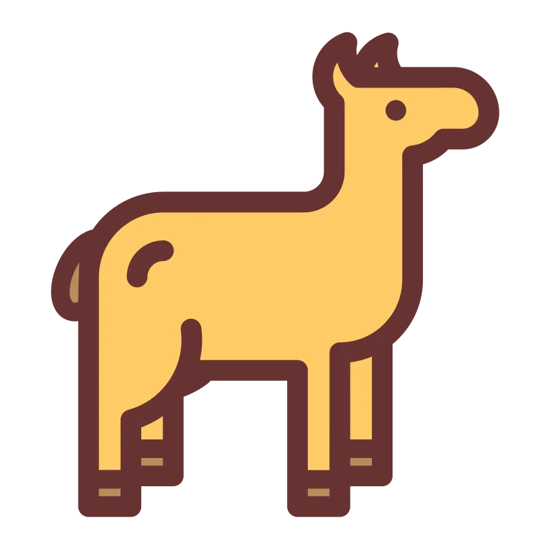
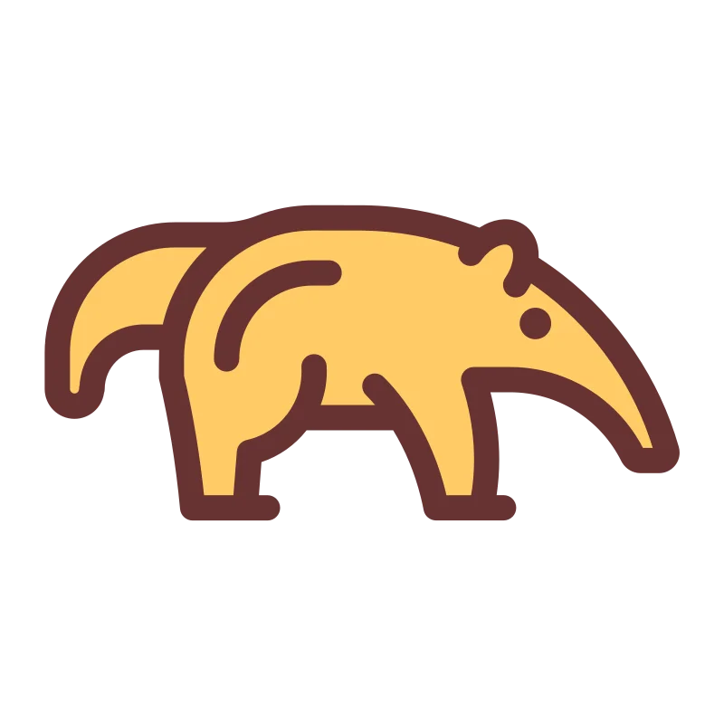

Action Fields

Alpaga
Les alpagas sont des animaux domestiques qui vivent dans les régions montagneuses d'Amérique du Sud. Ils sont généralement inoffensifs pour les humains.
Tout de même, si un alpage vous charge, il est préférable de s'éloigner.

Fourmilier
Les fourmiliers sont des animaux sauvages qui vivent en Amérique du Sud. Ils sont généralement inoffensifs pour les humains.
Tout de même, si un fourmilier vous charge, il est préférable de s'éloigner.